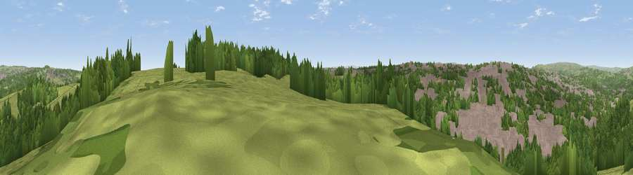

Viewpoint near Calverley
#22609 in England · top 36% of its area beats it · near CalverleyThe view, rendered

A 360° render of this exact spot computed from the terrain model, tree cover and land cover — summer colours, afternoon light, calibrated against photographs of famous viewpoints. Real trees, hedges and buildings will differ in detail.
The panorama
Grey silhouette: terrain skyline in each direction (720 bearings, Earth curvature and refraction included). Dashed green: skyline with trees (+15 m) and buildings (+8 m) as obstacles. Blue strip: how far the ground is visible on each bearing.
Where the view opens
Wedge length = distance to the farthest visible ground on that bearing (vegetation-aware). Rings at 10, 25 and 50 km.
What fills the view
38% woodland · 30% grassland · 30% built-up ·
Angular shares of the visible panorama (visual magnitude), not map area. Landscape diversity 0.51 (0–1 Shannon).
Key numbers
More beautiful places nearby
The staircase of upgrades: each row has a higher view potential than everything closer. Driving times are estimates from straight-line distance, calibrated against real road routing — check an actual route before setting out.
| Place | Direction | Drive | Score |
|---|---|---|---|
| Viewpoint near Calverley | ENE · 0 km | ~1 min | 51.2 |
| Viewpoint near Pudsey | SE · 2 km | ~6 min | 52.2 |
| Viewpoint near Wrose | WNW · 4 km | ~8 min | 66.5 |
| Rawdon Billing | NNE · 5 km | ~10 min | 73.0 |
| Viewpoint near Otley | N · 9 km | ~17 min | 77.5 |
| Viewpoint near East Witton | N · 49 km | ~71 min | 77.8 |
| Darwen Hill | WSW · 54 km | ~75 min | 80.7 |
| Viewpoint near Thirlby | NNE · 57 km | ~79 min | 81.5 |
53.81744, -1.70264 · source: screening · position refined by local search. Computed location — check access rights before visiting.